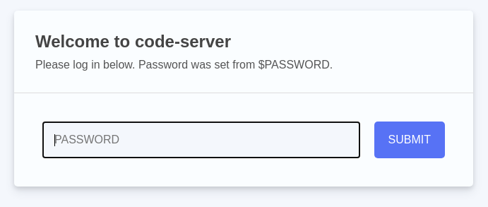
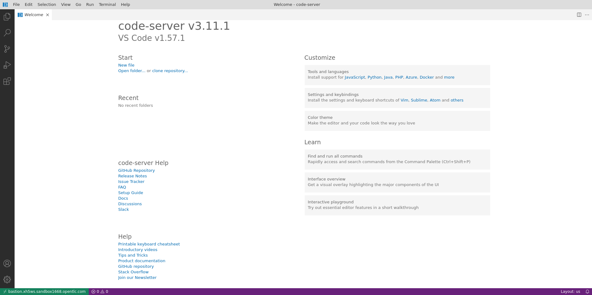
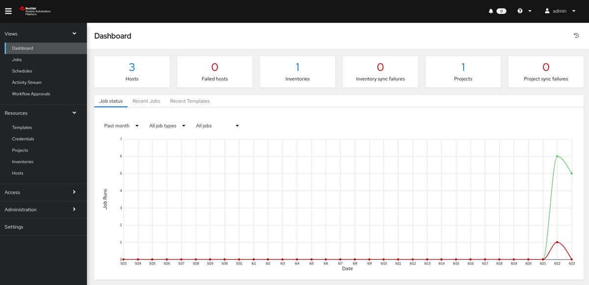

During the planning of Red Hat Ansible Automation Platform 2 the decision was made to rename a number of components. The main reason behind this is to make it clear that e.g. Ansible Engine and Ansible Tower are parts of an comprehensive automation platform.
So the artist formerly known as Ansible Tower is now called “automation controller” (without capitals!) but provides basically the same functionality.
Automation controller basically is an API to Ansible Automation, most users will get in touch with it through the web-based UI which uses the API underneath. It provides the following features:
A user-friendly dashboard
Role based access control
One-click automation templates
Management of dynamic inventory sources
Automation workflows with approval
A solid audit track (“who did what when”)
And much more… as you’ll learn in this lab!
In this lab you work in a pre-configured lab environment. You will have access to the following hosts:
| Role | URL for External Access (if applicable) | Hostname Internal |
|---|---|---|
| Automation controller | autoctl1.<GUID>.<SANDBOXID>.opentlc.com | autoctl1.<GUID>.internal |
| Visual Code Web UI | bastion.<GUID>.<SANDBOXID>.opentlc.com | |
| Managed RHEL8 Host 1 | node1.<GUID>.internal | |
| Managed RHEL8 Host 2 | node2.<GUID>.internal | |
| Managed RHEL8 Host 3 | node3.<GUID>.internal |
The lab environments in this session have a <SANDBOXID> and are separated by numbered <GUID> accounts. You will be able to access the hosts using the external hostnames. Internally the hosts have different names as shown above. Follow the instructions given by the lab facilitators to receive the values for <GUID> and <SANDBOXID>!
Automation controller has already been installed and licensed for you, the web UI will be reachable over HTTP/HTTPS.
Wherever you see the placeholder VERY_SECRET_PASSWORD in the following pages, use instead the specific password provided to you on the lab page. In general, whenever you need a password, even without the placeholder explicitly written, it’s the same one.
Some hints to get you started:
Don’t type everything manually, use copy & paste from the browser when appropriate. But don’t stop to think and understand… ;-)
To edit files or open a terminal window, we provide VS Code delivered by VS Code server, basically the great Visual Studio Code Editor running in your browser. It’s running on the automation controller node and can be accessed through the URL https://bastion.<GUID>.<SANDBOXID>.opentlc.com
Commands you are supposed to run are shown with or without the expected output, whatever makes more sense in the context.
The command line can wrap on the HTML page from time to time. Therefore the output is often separated from the command line for better readability by an empty line. Anyway, the line you should actually run should be recognizable by the prompt. :-)
You’ll get the access information for your lab (URL’s, password) from a landing page. Getting access to this page depends on how you are consuming the lab:
If you deployed from RHPDS, you’ll receive an email with the landing page URL
If you attend this lab at an event, your lab facilitator will lead you to the landing page
Either way you’ll get an URL similar to this: http://<GUID>.<SANDBOXID>.opentlc.com
Your main points of contact with the lab are the automation controller’s web UI and VS Code in your browser. You’ll use VS Code to:
Open virtual terminals
Edit files
Now open code-server using the link from the lab landing page or this link in your browser by replacing <GUID> by your GUID (a four digits hexacode) and the <SANDBOXID>:
https://bastion.<GUID>.<SANDBOXID>.opentlc.com

Use the password provided on the landing page to login into the VS Code server web UI, you can close the Welcome tab. Now open a new terminal by heading to the menu item Terminal at the top of the page and select New Terminal. A new section will appear in the lower half of the screen and you will be greeted with a prompt:

If unsure about the usage, read the Visual Studio Code Server introduction, to learn more about how to create and edit files, and to work with the Terminal.
Congrats, you now have a shell terminal on your automation controller node. From here you run commands or access the other hosts in your lab environment if the lab task requires it.
Let’s have a first look at the automation controller: Point your browser to the URL you were given on the lab landing page, similar to https://autoctl1.<GUID>.<SANDBOXID>.opentlc.com (replace <GUID> with your GUID (a four digits hexacode) and <SANDBOXID> with the sandbox ID) and log in as admin. You can find the password again on the lab landing page.
The web UI of the automation controller greets you with a dashboard giving an overview of your automation including:
Recent job activity
The number of managed hosts
Quick pointers to lists of hosts with problems.
The dashboard also displays real time data about the execution of tasks completed in playbooks.

Before we dive further into using automation controller for your automation, you should get familiar with some concepts and naming conventions.
Projects are logical collections of Ansible playbooks in automation controller. These playbooks either reside on the automation controller instance, or in a source code version control system supported by automation controller.
An Inventory is a collection of hosts against which jobs may be launched, the same as an Ansible inventory file. Inventories are divided into groups and these groups contain the actual hosts. Groups may be populated manually, by entering host names into automation controller, from one of automation controller’s supported cloud providers or through dynamic inventory scripts.
Credentials are utilized by automation controller for authentication when launching Jobs against machines, synchronizing with inventory sources, and importing project content from a version control system. Credential configuration can be found in the Settings.
Automation controller credentials are imported and stored encrypted in automation controller, and are not retrievable in plain text on the command line by any user. You can grant users and teams the ability to use these credentials, without actually exposing the credential to the user.
A job template is a definition and set of parameters for running an Ansible job. Job templates are useful to execute the same job many times. Job templates also encourage the reuse of Ansible playbook content and collaboration between teams. To execute a job, automation controller requires that you first create a job template.
A job is basically an instance of automation controller launching an Ansible playbook against an inventory of hosts.